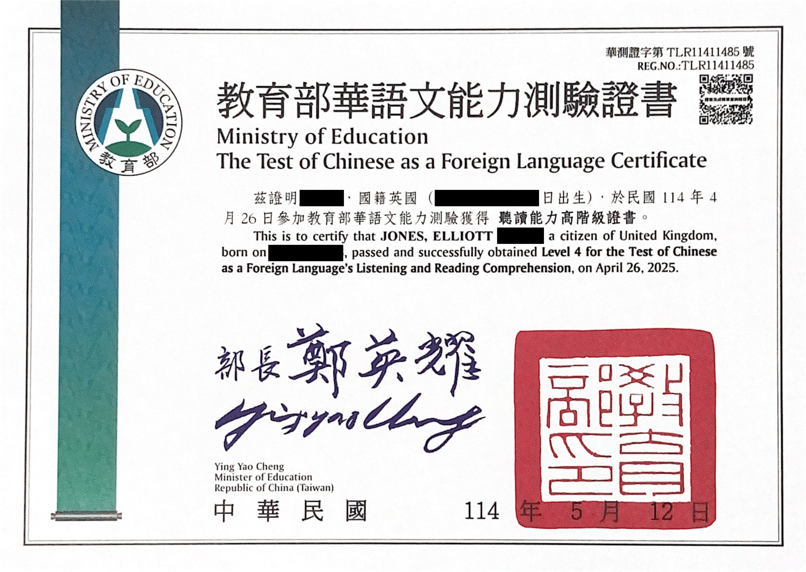

Elliott Jones
Technical Writer


Close to a decade in Taiwan and mainland China. Near-native level Mandarin Chinese fluency. Have worked for the British government in Shanghai and for many of Taiwan’s top hardware and software companies.
I Passed TOCFL Reading Level 4 (Chinese CEFR B2)
Posted May 23, 2025 by Elliott Jones
Last month I took the TOCFL (Test of Chinese as a Foreign Language) Listening & Reading exam once again.
Going into it for the third time, but the first time in 11 months, I was feeling very confident, having boosted my reading ability by reading every "A Course in Contemporary Chinese 5" (當代中文5) article in the month prior to the exam, and doing thousands of Anki reviews to learn all of the new vocabulary.
Last time I took the exam I got Level 4 (CEFR B2 / equiv. to HSK 6) on the listening section but only Level 3 (CEFR B1) on the reading section, which was a fair grade because my reading was very far behind my listening at the time. This time, I was hoping to get Level 4 on the reading section for the first time.
Listening Section
Annoyingly, when the listening section started, the audio for my first test item didn't play. I called over one of the exam staff and after trying to fix it for a while, they eventually moved me over to another computer, where I logged in and was finally able to hear audio. Unfortunately, by the time my audio was working, I had already missed audio for the first five questions (and there were only about 30 overall, so more than 16% of the entire listening section). The staff said they couldn't restart the exam for me... Not only did I lose points on those easy first questions that I would definitely have gotten right, but I was thinking about this through the rest of the exam which threw me off quite a bit. Because of all this, my listening score was the same as the first time I did the listening section about a year ago (550 out of 700)...
Reading Section
The reading section was a different story though, I did really well. Last time I did the reading test in May 2024, I got 540 out 700, but this time I got 585 out of 700, a 45 point increase, which was good enough to get Level 4 for reading, which I have never got before. Almost all of that 45 point progress came in the last month or so too, since I wasn't focused on reading much before then, so this is great motivation for me to stick to my current study routine. I was actually only 3.6% (25 points) away from getting Level 5 (CEFR C1) on reading, so if I keep studying at this level and don't get burned out, I should achieve Level 5 soon.
Certificate
Today I recieved my certificate, and its the first time I have gotten the Level 4 certificate on the Listening & Reading exam, because although I had previously passed Level 4 for listening, my combined listening and reading score was not enough to get Level 4 overall. Now I have the Level 4 certificate for Listening & Reading, as well as Speaking, which I got at the end of 2024. Now I have my eyes set on TOCFL Level 5.
{kind=link}

Liked This Article?
Read My Last Article
I Passed TOCFL Speaking Level 4 (Chinese CEFR B2)
On November 11th, I took the TOCFL (Test of Chinese as a Foreign Language) Speaking exam. The TOCFL is Taiwan's Mandarin Chinese proficiency exam for non-native speakers.